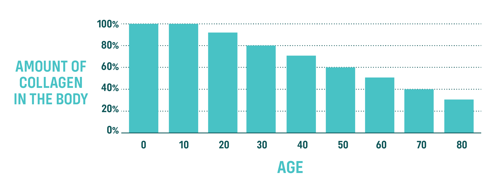
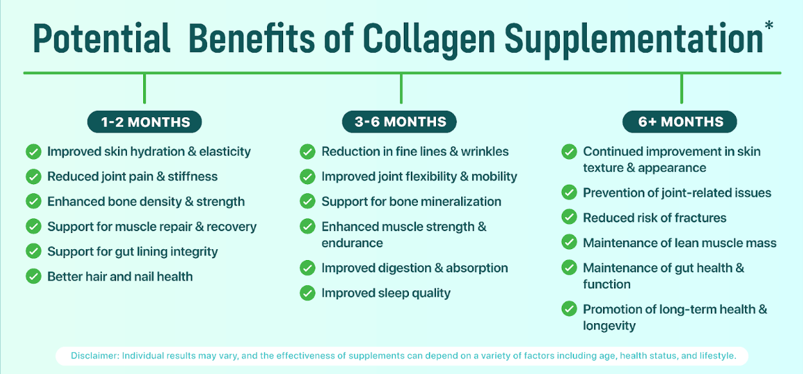

5 Best Collagen Supplements of 2024: Natural Review’s Top Picks
What to Look for in a Collagen Supplement
- 1. Sourced from Grass-Fed Cows: The very first thing we looked at was whether or not the collagen was sourced from grass-fed bovine (cows). Ideally, we do not want to consume collagen sourced from fish (due to high mercury levels), pork (due to its distinct taste/odor), or chicken/eggs (due to the scarcity of free-range chicken). This makes grass-fed bovine the superior choice.
- 2. Type 1 and 3 Collagen: There are over 28 different types of collagen, but these two types—Type 1 and 3—make up over 90% of your body’s collagen. When your collagen supplement has these two types, you’re giving your body exactly what it needs to maintain healthy skin, hair, nails, bones, and joints.
- 3. Truly Flavorless & Odorless: Several collagen supplements claim to be flavorless and odorless…until you see customer reviews saying that it tastes like chicken soup or smells like manure. That said, you want to make sure your collagen powder is truly flavorless and odorless so that you can enjoy it in your coffee, tea, smoothies, and recipes.
- 4. Simple Ingredients: The ingredient label on the back of your collagen supplement should be simple and straightforward. Ideally, it has just one ingredient: bovine collagen. Avoid brands that flaunt fancy “proprietary” formulas. These are often a red flag, making it nearly impossible for consumers to know what exactly is in a product and in what quantities.
- 5. Affordable Price: A collagen supplement should be affordable enough that you can purchase it for months and years to come. Yet, some supplements are so outrageously priced (like $50 for 30 servings) that you can barely afford to try them out for a month. For that reason, we provide a “price per serving” for each collagen supplement listed.
Natural Reviews Top 5 Picks for 2024
-
 Grass-Fed & Pasture-Raised
Grass-Fed & Pasture-Raised
-
Type 1 & 3 Collagen
-
Affordable Pricing (+Bulk Discounts)
-
Only 1 Ingredient
-
Flavorless & Odorless
-
Promotes Skin, Hair, & Nail Health
-
Strengthens Bones, Muscles, & Joints
-
Quickly Dissolves in Hot or Cold Liquids
-
Third-Party Tested
-
Made in the USA
-
Over 4 Million Jars Sold
-
Over 7,500 5-Star Reviews
-
365-Day Money-Back Guarantee
- Only Available ONLINE
NativePath Collagen Peptides features 10 grams of pure, grass-fed collagen peptides per scoop. Sourced from grass-fed cows roaming the green pastures of Brazil, this powder is flavorless, odorless, and quickly dissolves into any liquid. So much so that you can’t even tell it’s there. Most users enjoy adding it to their morning cup of coffee, reporting that it “blends easily and is smooth tasting.” A quick scroll through NativePath’s reviews and you’ll see thousands of customers proclaiming less hip, knee, and back pain, more vibrant skin, thicker hair, and more. For these reasons, NativePath secures the #1 spot on our list of 2024’s best collagen supplements.
VIEW NATIVEPATH-
Grass-Fed
-
Type 1 & 3 Collagen
-
Unflavored
-
NSF Certified for Sport
-
Made in the USA
- Expensive (Double the price of our #1 Pick)
- Limited Research on Nicotinamide Riboside
- Not Ideal for Those with Diabetes
- Most Suitable for Athletes
- Shorter Return Window Than #1 Pick (60 Days)
Securing the second spot on our list is Collagen Fit by Thorne. This collagen supplement is impressive in that it’s NSF Certified for Sport—a certification that tests for 290 substances banned by major athletic organizations. However, the addition of nicotinamide riboside (a unique form of vitamin B3) raises a small red flag. Apart from there being very little research on this vitamin, it may affect blood sugar levels. That said, individuals with diabetes or those taking medications that affect blood sugar should use caution and consult with a healthcare professional before starting supplementation.
VIEW THORNE-
Grass-Fed & Pasture-Raised
-
Made in the USA
-
Affordable Price
- Contains Egg
- Unpleasant Taste & Smell
- Contains Multiple Types of Collagen
- Short Return Window (Only 30 Days)
The Collagen Peptides from Ancient Nutrition ranks third on our list of 2024’s best collagen supplements. We appreciate the price point of this product, coming in at just $1.15 per serving. They are the first collagen supplement to include a proprietary fermented eggshell membrane collagen, claiming that this ingredient can reduce exercise-induced joint discomfort. However, this addition may be what’s causing complaints of flavor and smell. Dozens of customers have reported that it has a strong taste/smell…so much so that many can’t bring themselves to drink it. One customer even reported: “It gave my morning coffee a chicken soup flavor.”
VIEW ANCIENT NUTRITION-
Grass-Fed & Pasture-Raised
-
Type 1 & 3 Collagen
-
Only 1 Ingredient
-
Certified B Corporation
-
Made in the USA
- Complaints of Cutting Corners
- Some Users Report a Bad Taste/Odor
- Doesn’t Come With a Scoop
- Short Return Window (Only 30 Days)
Since its start in 2013, Vital Proteins has been a frontrunner in the collagen industry. But the quality of its supplements has faltered over the past few months. Like most brands, Vital Proteins started with good intentions, until it got bought by Nestle in 2020. Now, even the most loyal customers are complaining about a recent change in formula, flavor, and dissolvability…even going so far as to say that the brand may be “cutting corners.” However, Vital Proteins is still claiming that its bovine collagen peptides are grass-fed and pasture-raised—something that’s essential when purchasing a collagen supplement. All things considered, Vital Proteins has dropped to fourth on our list of 2024’s best collagen supplements.
VIEW VITAL PROTEIN-
Grass-Fed & Pasture-Raised
-
Type 1 & 3 Collagen
-
Only 1 Ingredient
-
Affordable
- Not Third-Party Tested
- Possible Lead Exposure
- Complaints of a Possible Change in Formula
- Some Users Report an Unpleasant Taste
- Short Return Window (Only 30 Days)
You’ve likely seen this brand at your local Costco…but how does it compare to the other collagen brands on our list? We like that Orgain Collagen Peptides is grass-fed, pasture-raised, and the second most affordable supplement on our list (coming in at just $1.07 per serving). However, in a report from the Clean Label Project, it was found that Orgain Collagen Peptides, Unflavored had the most amount of Lead among the 30 collagen products tested. This raises a big red flag when it comes to the brand’s quality control. For that reason, Orgain came in last on our list.
VIEW ORGAIN- Multi-Collagen Supplements: When a collagen supplement contains collagen fibers other than Types 1 and 3 (the two most abundant types in the body), it usually signals that the rest are just “filler” fibers that provide no added benefits. That said, avoid collagen supplements that claim to have Types 1, 2, 3, 4, 5, and so on. The most effective supplements will be those that contain just Type 1 and 3 collagen.
- Heavy Metals & Contaminants: This is a no-brainer, but worth noting. Some collagen products may be contaminated with heavy metals or other harmful substances due to poor sourcing or manufacturing practices. Look for products that have been third-party tested for purity and safety.
- Lack of Transparency: Brands that do not clearly disclose their sourcing, manufacturing processes, or collagen types can be a red flag. Transparency is key to understanding the quality and efficacy of the supplement. Luckily, we’ve done the digging for you and present all the pros and cons you need to make an informed decision, right here in this article.
What Is Collagen, Anyway?
Collagen is the most abundant protein in the human body, accounting for nearly 30% of the body’s total protein content.
It provides structural support to skin, muscles, bones, and tendons, which is why it’s often called the “glue” that holds the body together.
However, as you age, your natural collagen production goes down. This decline usually starts in your mid-20s and slowly, steadily drops by 1.0%-1.5% each year.
This is why, around the age of 30, you start feeling a little achier than usual, wrinkles start forming around your eyes and mouth, and hair seems to appear thinner.
And once you reach 60 years of age, your collagen levels are about half of what you started life with. This often manifests through brittle bones, stiff joints, sagging skin, and dental issues.
It’s no wonder collagen supplements are so popular…the body needs this type of protein. In the next section, we’ll cover some of the top benefits you can start seeing and feeling within just one to six months of starting supplementation.
What Are the Benefits of Collagen?
By taking a premium grass-fed collagen supplement daily, you may experience the following science-backed benefits:

6-Month Timeline of Using Collagen Peptides
Here’s a timeline of when you can expect to see and feel the results of collagen supplementation:
